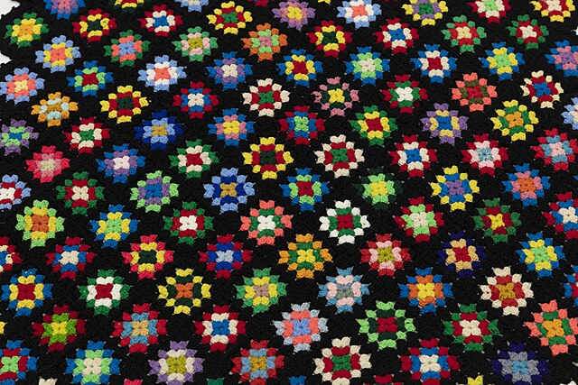

Introduction to granny squares
Learn what what granny squares are, and how they’re structured.
If you’d prefer to start making something, head over to the tutorial Make a crochet granny square.
What is a granny square?
A granny square is a piece of crochet made using the granny stitch to create a checkerboard-style mesh square panel. It is crocheted in the round, making it symmetrical on all sides.
- Granny stitch: A crochet stitch that comprises clusters of 3 double crochets with an empty space between each cluster, to create the famous checkerboard effect.
- In-the-round crochet: A style of crochet where you create the centre of the piece first, and then work out in concentric circles or spirals, increasing the number of stitches each row.
Crocheters often use many granny squares stitched together, or even just one large granny square:

A blanket made from several small granny squares.
Image source: Wikicommons
.jpg){kind=link}

A blanket made from one large granny square.
Image source: Wikicommons
{kind=link}
Structure of a granny square
There are three elements of a granny square:
- Granny clusters: Groups of 3 double crochets.
- Empty spaces: The empty spaces between granny clusters, made with either 1 chain stitch or no stitches.
- Corners: An empty space made of 2 or 3 chain stitches.
Each row of a granny square alternates between granny clusters and empty spaces.
This crochet diagram demonstrates their structure:

A diagram of a granny square, using standard crochet diagram symbols.
Image source: ThisIsCrochet
In the above diagram, the crocheter starts in the centre and works anti-clockwise to make each row. At the end of each row they close the loop, then create three chain stitches to “climb” to the appropriate height to start the next row.
Variations
Granny squares are so universal that almost every crocheter has their preferred way to make them. For example:
- Some crocheters use a continuous piece of yarn to make a granny square, while others prefer to cut and start a new one for each row.
- Some crocheters make chain stitches between each granny cluster, while others just go straight from one cluster to the next.
- Some crocheters use 2 chain stitches for corners, while others use 3.
All of these small variations still follow the basic rules of a granny square: that there are granny clusters, empty spaces, and corners.
To learn more about constructing a granny square, see the tutorial Make a crochet granny square.